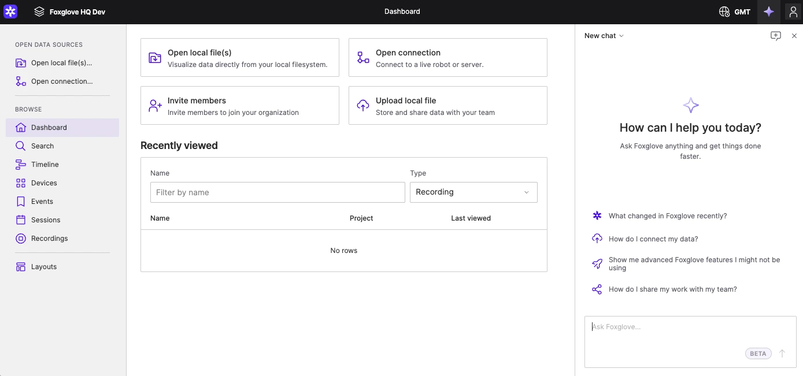

01
重点：Agent 与工作区协作
Foxglove · 机器人数据与 Agent

官方 Agent sidebar 文档空态截图：左侧导航、中央数据接入、右侧 Agent。尚未加载机器人数据，截图拍摄日期未确认。
主工作台与 Agent 侧栏并排。首屏提供数据接入入口和示例问题，输入框固定在侧栏底部；官方文档还展示工具调用展开与变更确认流程。
可以借鉴
对话应与当前机器人、任务和异常关联，回答可以定位到对应对象或时间；把处理记录折叠为可展开步骤，待确认操作显示明确摘要。